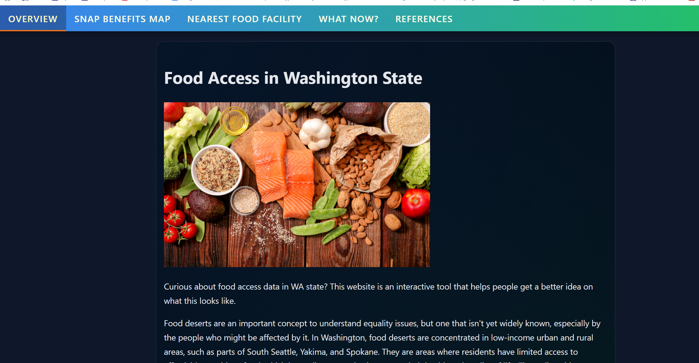

“I like turning messy data into clear maps, models, and simple web pages.”
Summary
Student focusing on data science + GIS + web mapping. I’ve done projects in spatial analysis (food access),
machine learning (classification + time-series), and human–AI interaction research.
Skills
- Python: pandas, numpy, scikit-learn, statsmodels
- GIS: ArcGIS Pro, QGIS, GeoJSON
- Web: HTML/CSS, basic JavaScript
- Tools: Git, GitHub, VS Code
Work Experience (last 10 years)
University of Washington (Seattle, WA)
Student Research / Course Projects (GIS & Data) (Sep 2024 – Present)
- Built interactive maps to visualize food accessibility patterns using public datasets.
- Cleaned and joined spatial datasets and produced clear visuals for reports/presentations.
- Worked in small teams using GitHub for version control and collaboration.
University of Washington (Seattle, WA)
Machine Learning Projects (CSE/STAT 416) (Jan 2024 – Dec 2025)
- Trained predictive models (logistic regression, ARIMA/SARIMA) and evaluated RMSE/MAE.
- Did feature engineering and handled missing data in real datasets.
University of Washington (Seattle, WA)
Human–AI Interaction Study (Class Project) (Mar 2025 – Jun 2025)
- Studied how emoji use in AI responses can influence user emotion (valence/arousal).
- Designed a small mixed-methods plan (survey + interview) and discussed ethics.
Projects
Food accessibility Map in Washington

Links (for grading practice):
Start Bootstrap ·
Mapbox ·
University of Washington